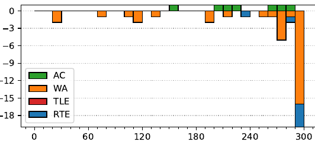

47th ICPC World Finals
Problem authors: The World Finals judges and Bob Roos
Solved by 7 teams.
First solved after 153 minutes.
Shortest team solution: 1059 bytes.
Shortest judge solution: 532 bytes.

Suppose we have some schedule with isolation k. Then during the first k weeks, every pair of individuals on different teams meet at least once, and if we repeat the schedule for these first k weeks indefinitely, we get a periodic schedule for arbitrarily many weeks with the same separation. This means that the problem is equivalent to finding the smallest k such that all people can meet at least once in k weeks. If k ≤ w then we take that schedule and repeat it to get a full schedule of w weeks, and if k > w then the answer is infinity.
We can view a k-day schedule for one team as a binary string x of length k, with xi = 0 indicating that the first team member comes to work on day i, and xi = 1 indicating that the second team member comes to work on day i. Two binary strings x and y are compatible if for all four combinations c ∈ {00, 01, 10, 11} there is some i such that xiyi = c. A schedule for n teams is then a list of n binary strings that are pairwise compatible.
We claim such a schedule exists if n ≤ (⌈k/2⌉)k−1. To see this, consider enumerating all binary strings of length k with a 0 in the first bit, followed by some binary string of length k − 1 with ⌈k/2⌉ ones. It is not hard to see that any pair of such strings are pairwise compatible: since they both have the same number of ones and are different strings, there must be some index where we see the combinations 01 and 10; since they both start with 0 there is an index where we see the combination 00; and since they both have more than (k − 1)/2 ones among the last k − 1 bits, there must be some index where we see the combination 11.
We also claim that such a schedule cannot exist if n > (⌈k/2⌉)k−1. To see this, note first that without loss of generality we can assume that all strings in a schedule start with 0 (because if we flip 0 and 1 in a string, it remains compatible with the same strings). Also, since there must both be some i such that xiyi = 01 and some j such that xjyj = 10, any list of pairwise compatible schedules must be an antichain in the Boolean lattice, which by Sperner's Theorem implies that there can be at most ( k−1 ⌈(k−1)/2⌉ ) such schedules. If k is even this matches the claimed bound. If on the other hand k is an odd number, this only gives a bound of ( k−1 (k−1)/2 ) whereas the claimed bound is ( k−1 (k+1)/2 ). The last step here, the details of which we leave for the reader to fill in, is to improve the bound using the fact that if we pick some string x with exactly (k − 1)/2 ones, we cannot also pick the complement of x (by which we mean the string where we keep the first position 0 and flip the remaining k − 1 bits). Of course, figuring out the details of this is not necessary during the contest: coming up with the construction above, and confidently guessing that it is optimal, is sufficient to solve the problem.
This leads to the following simple algorithm: given n, find the smallest k such that (⌈k/2⌉)k−1 ≥ n, enumerate n different binary strings of length k with ⌈k/2⌉ ones (and starting with zeros), and use these as the schedule.